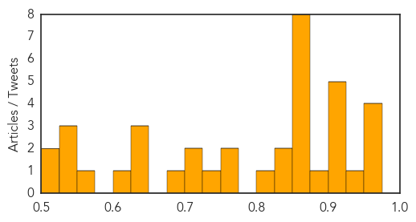
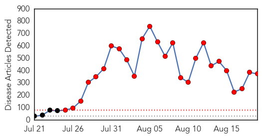
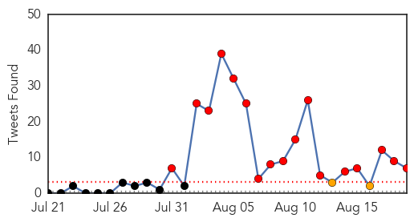
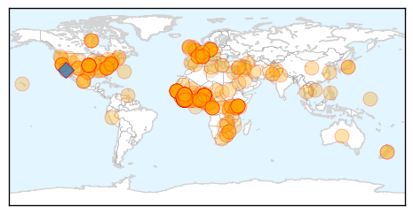
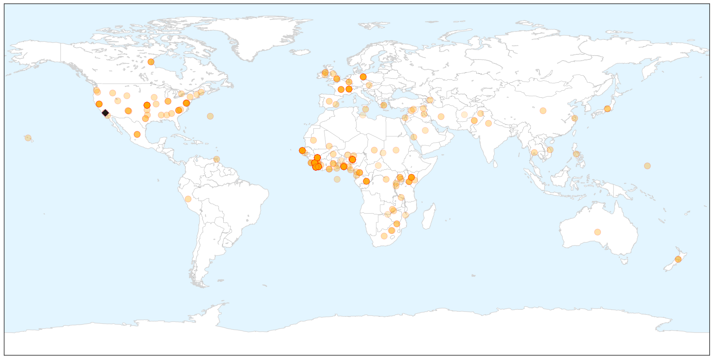
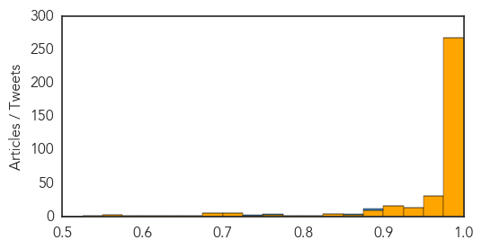

Unknown
30-Day Web Trend
0 alerts, 0 warnings

30-Day Twitter Trend
6 alerts, 1 warnings

Article Locations


Article Confidences
Top Articles:
- 0.967
- WHO appeals for US$ 14 million to scale up health operations in Ukraine
- 0.966
- First case of Malaria in two years strikes Mobile teenager
- 0.964
- Alabama teen contracts malaria while in Uganda, first case in Mobile County in 2 years
- 0.962
- 254 encephalitis deaths in Bengal this year
- 0.925
- Central Alabama VA vague about legionella testing
- 0.920
- Vietnam reports 40 human rabies deaths this year
- 0.917
- Chicago Tribune
- 0.917
- Chicago Tribune
- 0.917
- Chicago Tribune
- 0.910
- The world windows to Thailand
- 0.880
- Daily Jefferson County Union: News
- 0.866
- Islamic State says another US journalist's fate depends on Obama
- 0.866
- An Israeli soldier reads a book in a staging area near the border with the northern Gaza Strip August 18, 2014
- 0.866
- Putin to hold talks with EU, Ukraine leaders on Aug. 26 in Minsk
- 0.866
- Junior rebel commander detained in east Ukraine
- 0.866
- Iraqi forces fail to recapture Tikrit from militants again
- 0.866
- Iraqi forces mount operation against Islamic State in Tikrit
- 0.866
- Police come under "heavy gunfire" in racial unrest in Ferguson, Missouri
- 0.866
- Police fire tear gas, stun grenades at Missouri protesters
- 0.841
- Three Deaths Reported Among 156 Cases in UK Salmonella Outbreak
- 0.830
- Prospects of Pig Exports to Russia Resuming Vanishing Fast
- 0.816
- New tick-borne disease discovered
- 0.773
- Pig virus costs farmers $800 million a year
- 0.758
- Polio Vaccines May Not Always Work
- 0.733
- U.S. agency: DHHR can’t handle chemical incidents
- 0.711
- STD rates skyrocket in Hillsborough County
- 0.702
- Measles, polio immunization set
- 0.682
- Test alteration simplifies diagnosis of poultry diseases
- 0.638
- Self-Reported Health Information Predicts High-Need Medicaid Patients
- 0.637
- Mangalore, Udupi have most malaria cases in Karnataka
- 0.626
- Tests positive for total coliform again in water-boil area on Flint's west side
- 0.615
- HPV vaccine provides long-lasting protection
- 0.567
- Research team evaluating Lyme disease in province
- 0.540
- The Portland Press Herald / Maine Sunday Telegram
- 0.539
- Alaska Health Officials Suspect Botulism in One Death, Two Illnesses
- 0.525
- Can Twitter Help Better Identify Foodborne Illness Cases?
- 0.514
- Water Boil Mandate in Fair Haven, V.T. After E. Coli Found
- 0.507
- Gaza, Israel and West Bank: No end in sight to overwhelming human cost of conflict - occupied Palestinian territory
Top Tweets:
-
No tweets found for Aug 19, 2014
Ebola
30-Day Web Trend
26 alerts, 0 warnings

30-Day Twitter Trend
17 alerts, 2 warnings

Article Locations

X

Article Confidences
Top Articles:
- 1.000
- Ebola patients found as death toll surges
- 1.000
- Liberia fights Ebola in capital, imposes night curfew -UPDATED
- 1.000
- Liberia: 3 receiving untested Ebola drug improving
- 1.000
- Nigeria scrambles to contain Ebola
- 1.000
- Liberia fights Ebola in capital, W. Africa toll tops 1,200
- 1.000
- Ebola death toll tops 1,200 as disease outpaces containment efforts
- 1.000
- Ebola patients on experimental drug improving
- 1.000
- Patient checked for Ebola virus at Kaiser hospital in Sacramento
- 1.000
- Ebola: UN Health Agency Reports Encouraging Signs in Nigeria
- 1.000
- WRAPUP 4-Liberia fights Ebola in capital, W. Africa toll tops 1,200
- 1.000
- WRAPUP 4-Liberia fights Ebola in capital, W. Africa toll tops 1,200
- 1.000
- Ebola crisis: Two Austrian men given all clear, African Development Bank announces $60 million to fight epidemic
- 1.000
- Ebola crisis: Two Austrian men given all clear, African Development Bank announces $60 million to fight epidemic
- 1.000
- Ebola poses less of a risk than more contagious infections, Pittsburgh experts say
- 1.000
- Travel, tourism groups join up to keep travelers informed about Ebola
- 1.000
- Observer
- 1.000
- Liberia: 3 receiving untested Ebola drug improving
- 1.000
- N.M. woman, Calif. patient being tested for Ebola: health officials
- 1.000
- If Ebola hits Lagos, we're in big trouble
- 1.000
- Liberia Ebola Patients Found as Death Toll Surges — Naharnet
- 1.000
- Security measures in Ebola outbreak
- 1.000
- Travel, tourism groups join up to keep travelers informed about Ebola
- 1.000
- Patient at Sacramento Kaiser Permanente tested for Ebola
- 1.000
- Liberia records most new Ebola deaths - Africa
- 1.000
- Ebola outbreak: Brazilians cancel Namibia visit over Ebola fears, despite conference being 3,000 miles from disease hotspot
- 1.000
- Ebola Kills Another 84 in West Africa over 3-day period
- 1.000
- Liberia president declares Ebola curfew
- 1.000
- Liberia fights Ebola in capital, W. Africa toll tops 1,200
- 1.000
- Ebola virus in Africa, Middle East
- 1.000
- What does EMS need to know?
- 1.000
- Travel Screenings Recommended as Ebola Rates Climb
- 1.000
- The tiny victims of West Africa's ebola epidemic: Death toll soars above 1,200 after highly infectious disease kills 84 people in just three days
- 1.000
- The most from the coast
- 1.000
- Ebola crisis: Liberia confirms West Point patients missing
- 1.000
- Nigeria scrambles to contain Ebola
- 1.000
- Ebola crisis: 3 receiving untested Ebola drug in Liberia improving
- 1.000
- Liberia declares Ebola curfew, quarantines slum
- 1.000
- Ebola crisis: Doctors in Liberia 'recovering after taking ZMapp'
- 1.000
- Ebola crisis: A doctor's view from Sierra Leone
- 1.000
- Joint statement about Ebola released by world bodies
- 1.000
- Liberia president declares Ebola curfew
- 1.000
- Northern California Patient Being Treated For Possible Exposure To Ebola Virus « CBS San Francisco
- 1.000
- UN calls for Ebola passenger screening as W. Africa death toll passes 1,200 — RT News
- 1.000
- Liberia issues ‘shoot on sight’ order on Sierra Leonean immigrants
- 1.000
- Liberia president declares Ebola curfew - MyNorthwest
- 1.000
- Liberia fights Ebola in capital; West Africa toll tops 1,200
- 1.000
- Liberia fights Ebola in capital, West Africa toll tops 1,200
- 1.000
- Liberia fights Ebola in capital, W. Africa toll tops 1,200
- 1.000
- Govt slams Ebola tourism concerns
- 1.000
- Kaiser patient being tested for deadly Ebola virus
Showing top 50 articles...
Top Tweets:
- 0.880
- End Ebola Now informational PSA for the West African region - please watch and share https://t.co/VLPIbUdvn5 endebolanow ebola
- 0.880
- End Ebola Now PSA for the West African region - please watch and share! https://t.co/VLPIbUdvn5 endebolanow ebola
- 0.880
- End Ebola Now PSA for the West African region - please watch and share https://t.co/VLPIbUdvn5 endebolanow ebola
- 0.869
- End Ebola Now PSA for the W. African region - please share https://t.co/FPXQZWdVrk endebolanow ebola
- 0.758
- Bravo to for raising Ebola awareness and prevention! https://t.co/yhRS5J2k7u endebolanow ebola prevention eradication
- 0.743
- In Sierra Leone the Emergency phone number is 117. Can somebody share the numbers for the other affected countries? ebola endebolanow
- 0.600
- RT: Great with. Weighs in on Ebola Icebucketchallenge & disease that terrifies him most: http://…